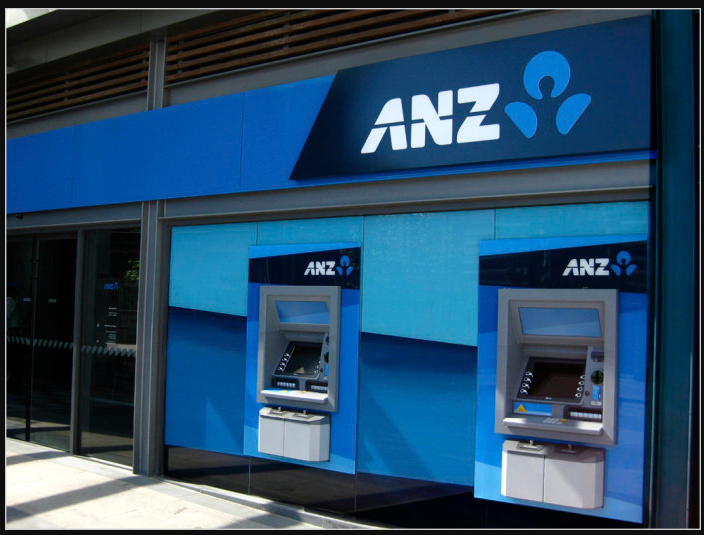
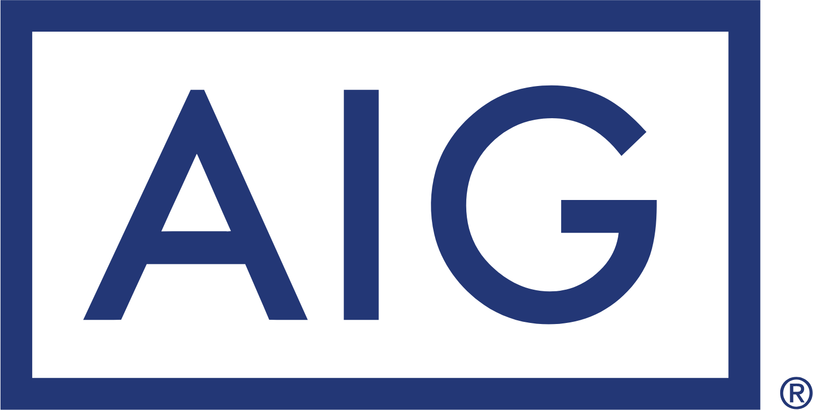

CyberSecurity
As a passionate IT enthusiast, I reflect my joy in working in cybersecurity industry which involves protecting technologies from evolving threats and ensure safety in digital landscapes. With strong foundations in security protocols, risk assessment and incident response, i thrive by using critical thinking skills to solve complex issues. This Portfolio showcases my skills, some projects and achievements in this field reflecting my commitment to continous learning and innovation. Join me as we expore cybersecurity and how it is important in todays' evolving world.
Mastercard Foundation
CyberSecurity Project
I completed Mastercard's Cybersecurity on forage. I served as an analyst on Mastercard's Security Awareness Team, helped identify and report security threats such as phishing, analyzed and identified which areas of the business needed more robust security training and implemented training courses and procedures for those teams.

I completed ANZ Australia's Cyber Security Management on forage. I focused on identyfing cyber Security threats, Investigated e-mails to report suspicious items and analysed packet capture file using open source tool to identify and investigate any potential threats.
Tata Group
CyberSecurity Analyst
I completed Tata Group's CyberSecurity analyst on Forage. I acquired expertise in identity and access management(IAM) principles, cybersecurity best practices and strategic alignment with business objectives. Beside that, i delivered comprehensive documentation and presentations showcasing the ability to communicate complex technical concepts effectively by collaborating with cybersecurity consulting team.
PwC Switzerland
CyberSecurity
I completed PwC Switzerland cybersecurity involving PwC Digital Intelligence, gaining experience in understanding and explaining intergrated defense. I developed expertise in intergrated defense strategies and their application in real-world scenerios. It also involved risk assesments and formulated security recommendations for client. Lastly i demonstrated proficiency in Network segmentation and firewall configurations.
AIG Shields Up
CyberSecurity

I completed cybersecurity threat analysis for the Cyber Defense Unit, researched and understood reported vulnerabilities showcasing analytical skills. I utilized Python skills to write a script for ethical hacking, avoiding ransom payments by bruteforcing decryption keys.
I Investigated root cause of network ransomware and developed a solution architecture to ensure compliance.
I focused on how Datacom's cybersecurity team to help protect it's clients. I investigated a cyberattack and produceda comprehensive report documenting findings and outlining key recommendations to improve cybersecurity posture. Lastly i conducted comprehensive risk assessment.